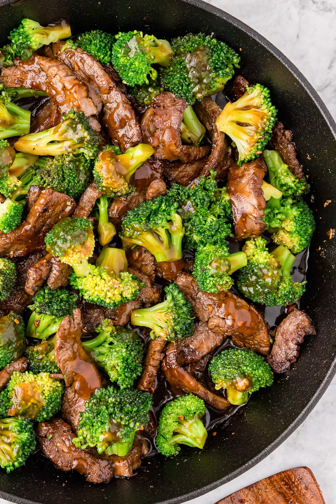

Broccoli Beef Recipe

Description
Simple but delicious beef broccoli recipe with a
sweet and savory sauce. Perfect for dinner or meal
prepping.
Ingredients
- 1 beef bouillon cube
- 1 cup warm water
- ½ cup soy sauce
- ⅓ cup brown sugar
- 2 cloves of garlic, minced
- 1 tablespoon of sesame oil
- 1 ½ pounds beef sirloin, cut into 1-inch strips
- 2 tablespoons cornstarch
- 2 pounds of broccoli florets, or to taste
- 2 cups of cooked jasmine rice
- 1 tablespoon of sesame seeds, for garnish (optional)
Directions
- Crumble beef bouillon cube into warm
water in a bowl and stir to dissolve;
add soy sauce, brown sugar, garlic, and sesame
oil and stir to dissolve sugar.
-
Put beef strips into a slow cooker crock pot.
Pour sauce mixture over the beef.
-
Cook on low for 6 to 8 hours (or on high for
4 hours).
-
Spoon 2 tablespoons liquid from the slow cooker into
bowl. Whisk the cornstarch into the liquid and stir the
cornstarch mixture into the liquid in the slow cooker
until consistent in color.
-
Cook on high until the sauce thickens, about 30 minutes.
-
Place a steamer insert into a saucepan and fill the
water to just below the bottom of the steamer. Bring
water to a boil.
-
Cook broccoli in covered steamer until tender, 2 to
6 minutes; add to sauce in slow cooker and stir to coat.
-
Ladle broccoli beef over portions of cooked jasmine rice
and garnish with sesame seeds.